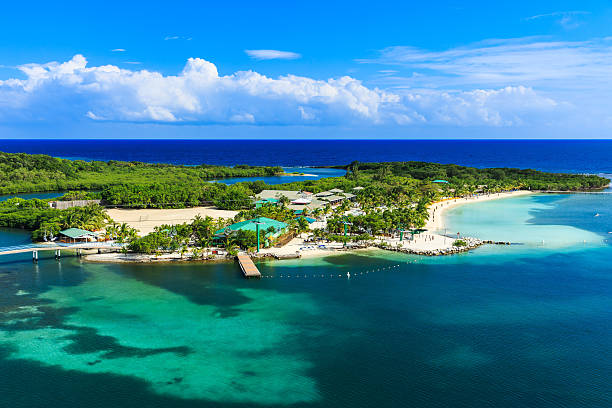

Donde la vida es mas bella

Roatán es conocido por algunos de los mejores y más económicos sitios de buceo del mundo. El hecho de que esté situado en la barrera de coral mesoamericana significa que hay muchos peces, corales y otras criaturas marinas para mantenerse ocupado bajo el agua. es la mayor de las Islas de la Bahía, famosa mundialmente por sus playas de arena blanca, aguas cristalinas color turquesa y el Sistema Arrecifal Mesoamericano.
Roatán es una isla situada en el mar Caribe, perteneciente al departamento de las Islas de la Bahía en la costa norte de Honduras